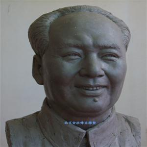

怎么去获得一份让自己满意的offer 你没有名校文凭，没有实际经验，那你应该通过什么样的方法去拿到一份offer... 删除>> 修改>> 2017-12-18作者：周浚覃个人博客：[程序人生] 一个应届毕业生所需要的专业素养 如果说掌握一门赖以生计的技术是技术人员要学会的第一课的话， 那么我觉得技术人员要真正学会的第二课，不是技术，而是业务、交流与协作，学会关心其他工作伙伴的工作情况和进展... 删除>> 修改>> 2017-12-18作者：周浚覃个人博客：[程序人生] 代码规范  如果说掌握一门赖以生计的技术是技术人员要学会的第一课的话， 那么我觉得技术人员要真正学会的第二课，不是技术，而是业务、交流与协作，学会关心其他工作伙伴的工作情况和进展... 删除>> 修改>> 2018-12-18作者：周浚覃个人博客：[程序人生] 学会linux你能干嘛 如果说掌握一门赖以生计的技术是技术人员要学会的第一课的话， 那么我觉得技术人员要真正学会的第二课，不是技术，而是业务、交流与协作，学会关心其他工作伙伴的工作情况和进展... 删除>> 修改>> 2018-12-18作者：周浚覃个人博客：[程序人生]